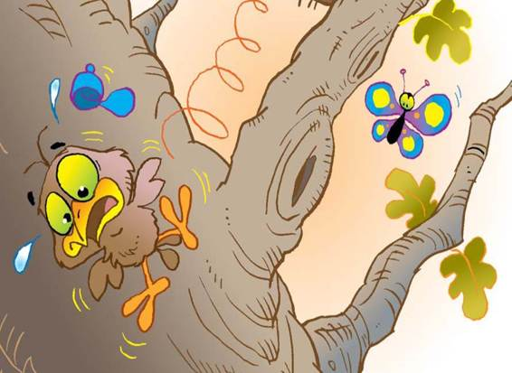

Billy didn’t want to answer, because if he opened his beak he would let go of the worm, so he just kept on pulling. He was standing against the edge of the nest and all that was holding him was the worm. When Cherry let go, Billy yanked the worm with all his might, and Reddy and Chirpy lost their balance and fell forward. Billy started to fall backwards off the edge of the nest! He opened his beak in fright and lost hold of the worm. Down and down Billy fell. He tried to flap his wings but it didn’t help much, because he didn’t have all of his wing feathers yet, and besides, he didn’t know how to fly. He landed with a “plop” on some soft grass.